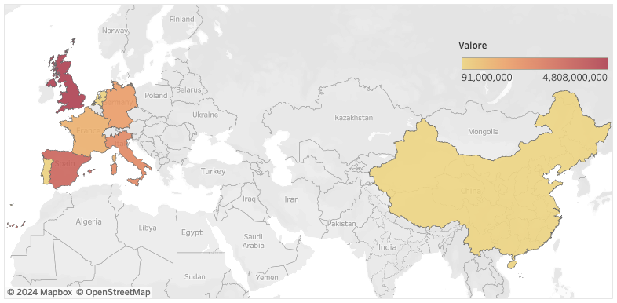

Punto di partenza: CR7 alla Juventus
Il 10 luglio 2018 Cristiano Ronaldo firma il contratto con la Juventus. Il passaggio del fenomeno portoghese dal Real Madrid alla squadra torinese è una manovra che "mira ad accrescere la forza economica del club e a moltiplicare le dita e gli occhi puntati sugli account bianconeri. Ronaldo rappresenta, infatti, una superstar commerciabile, il prototipo del giocatore che la Juventus cercherà anche in futuro sul mercato"[1].
Effettivamente, dall'estate scorsa l'attenzione ai social bianconeri ha subito un notevole incremento[2], come dimostrato dai numeri:
| Fan totali | ||||
| 11 luglio 2018 | 32.99 Mln | 11.17 Mln | 6.16 Mln | 50.32 Mln |
| 1 gennaio 2019 | 36.07 Mln | 20.33 Mln | 6.40 Mln | 62.9 Mln |
| Incremento Juve | +3.08 Mln (+9.33%) | +9.16 Mln (+82.01%) | +0.24 Mln (+3.89%) | +12.58 Mln (+25%) |
Le variazioni potrebbero non sembrare "incredibili" - il numero di followers sui social normalmente è sempre in crescita - ma stupiscono in particolare l'incremento che ha subito Instagram (social in crescita esponenziale da mesi[3]) e il confronto con le variazioni di altri club, come ad esempio il Barcellona:
| Fan totali | ||||
| 11 luglio 2018 | 102.64 Mln | 58.5 Mln | 28.8 Mln | 189.94 Mln |
| 1 gennaio 2019 | 102.67 Mln | 63.71 Mln | 28.98 Mln | 195.36 Mln |
| Incremento Barça | +0.03 Mln (+0.03%) | +5.21 Mln (+8.91%) | +0.18 Mln (+0.62%) | +5.42 Mln (+3%) |
Restringendo la visuale sulle principali squadre della Serie A, è evidente come la Juventus abbia un grande vantaggio nei social:
| Fan totali | ||||
| 36.07 Mln | 20.43 Mln | 6.40 Mln | 62.9 Mln | |
 Milan Milan |
24.80 Mln | 5.19 Mln | 6.71 Mln | 36.7 Mln |
| 11.31 Mln | 2.44 Mln | 1.62 Mln | 15.37 Mln | |
| 9.41 Mln | 2.20 Mln | 1.73 Mln | 13.34 Mln | |
| 4.16 Mln | 1.28 Mln | 1.40 Mln | 6.84 Mln |
Gli account social delle società di calcio e dei calciatori attualmente hanno un valore economico in aumento, oltre ad una capacità di attrarre sponsor e investimenti. Lo conferma il recente rinnovo dell'Adidas alla Juve: "In riconoscimento dell’eccellente performance della partnership a livello commerciale e di accresciuta visibilità del brand Juventus nel 2018, Adidas ha riconosciuto un bonus addizionale di € 15 milioni che verrà corrisposto prima del 31 dicembre 2018"[4] e l'incremento del valore del contratto con la stessa Adidas (+9 Mln stagionali)[5]. La presenza di legami tra il pubblico e i giocatori, possibile grazie ai social media e dettata da un valore emotivo, è un potenziale strumento di visibilità.
Tutto ciò fa pensare che in futuro le squadre saranno sempre più interessate ad acquistare giocatori popolari, che permettano di conquistare un maggior numero di sponsor, attratti dalla visibilità che potrebbero avere proprio grazie alla popolarità e alla fama dei giocatori. Il nostro obiettivo è quello di creare un indice che potrebbe essere utile per permettere alle società calcistiche di quantificare qualcosa di qualitativo come la popolarità e fare scelte di acquisto orientate in tale direzione.
Come misurare la popolarità?
La piattaforma SocialMediaSoccer analizza periodicamente le statistiche social delle squadre e dei calciatori, focalizzandosi in particolare su Facebook, Instagram e Twitter. È ragionevole pensare che la popolarità di un calciatore sia qualcosa che evolve nel tempo in base non solo al riscontro social ma anche - e soprattutto - alle performance ottenute sul campo, delle quali parlano i quotidiani sportivi nazionali ed internazionali. Per questo motivo l'indicatore finale sarà una fusione di più dimensioni: quella legata ai social, quella legata ai media ed infine una misura generica della popolarità sul web.
Tali misure sono state raccolte per i 300 giocatori che hanno ottenuto i maggiori valori di mercato su www.transfermarkt.com in data 1 Dicembre 2018; alcuni sono stati esclusi dalle successive analisi perché non appartenenti ai 5 campionati europei più importanti, cioè Serie A, La Liga, Bundesliga, Ligue 1 e Premier League.
Social Network
Per la nostra analisi abbiamo considerato il numero di follower sui tre social network Facebook, Twitter e Instagram, che nel complesso permettono di considerare un pubblico molto eterogeneo.
Nell’istogramma seguente vengono mostrati il numero totale di follower per ognuno dei 15 giocatori con il maggior seguito su Instagram (l’unico social posseduto da tutti i giocatori considerati). Si può notare come i primi tre giocatori siano molto distanti dagli altri, nonostante ad esempio Messi non abbia Twitter: si potrà notare come anche nelle analisi successive questi tre giocatori resteranno “estremi” rispetto a tutti gli altri.
Relativamente a Instagram abbiamo considerato anche la media dei “like” ottenuti nelle ultime 10 foto pubblicate e il numero di post in cui sia presente come hashtag il nome del giocatore considerato.
Media
Abbiamo deciso di considerare il mondo dei media perché è intuitivo riconoscere che la popolarità di un giocatore dipenda anche da quanto se ne parla, che si tratti delle sue ottime prestazioni in campo, perché oggetto di particolari simpatie dei tifosi, di un imminente trasferimento o di qualsiasi altro motivo, anche negativo, per cui faccia parlare di sé.
Abbiamo analizzato tre riviste per ognuno dei paesi dei cinque campionati e altre tre riviste di stampo più internazionale. Nei seguenti bubble charts ogni pallone è tanto più grande quanto maggiore è la popolarità del giocatore nella rivista in questione, ossia quanti più sono gli articoli nei quali viene citato, e tanto più scuro quanto più è alto il suo valore di mercato.
Qualche spunto per la lettura dei grafici:
- Alcuni giornali sono prettamente “nazionali” tipo Eurosport Francia, in cui si parla molto spesso di Lo Celso, Cavani o Thauvin, che non compaiono in evidenza in nessun’altra nazione; un altro esempio è Sky England che è particolarmente incentrato su giocatori del campionato inglese, ma soprattutto parla molto poco di giocatori di fama internazionale quali Messi e Ronaldo.
- Alcuni giocatori sono “caratteristici” di una nazione: Cavani per la Francia, Icardi e Higuain per l’Italia, Müller e Hummels per la Germania, Marcelo e Piqué per la Spagna, Hazard per l’Inghilterra.
- TheSun sembra un giornale molto più “democratico” in quanto le dimensioni delle bolle sono molto simili tra loro. Una cosa simile accade nei giornali internazionali, sebbene in essi si notino comunque alcuni giocatori famosi.
- Mundo Deportivo è un giornale più concentrato sulle vicende del Barcellona e sembra anche dare largo spazio agli articoli di calciomercato.
Come si vede dai grafici sottostanti, nelle riviste nazionali si parla maggiormente dei giocatori che attualmente giocano nel campionato della nazione in questione: la scelta di prendere in considerazione giornali di nazioni diverse e alcuni internazionali mira a compensare questo “effetto nazione”.

Web
Consideriamo, infine, queste due misure:
- Wikipedia Page Views: numero di visualizzazioni alla pagina dei giocatori su Wikipedia in un determinato arco temporale.
- Hit di google: numero di risultati che compaiono su Google cercando i nomi dei giocatori.
L'indice di popolarità
Cerca un giocatore:
L’indice finale di popolarità (IPOP) è una media pesata delle dimensioni considerate, ossia social, media, ricerche su wikipedia e hit di google. Un indice semplice ma efficace, come dimostrano i successivi grafici che lo mettono in relazione con le prestazioni, il ruolo, l’età e il valore di mercato dei giocatori.
Performance - IPOP - valore - ruolo
La Performance è calcolata come (assist+goal)/presenze, considerando l’intera carriera. Dividiamo per il numero di presenze in quanto siamo interessati a misurare e confrontare le prestazioni di giocatori di età molto diverse: un indice medio di influenza realizzativa è dunque più appropriato.
A colpo d’occhio si osservano tre gruppi distinti a seconda dei ruoli: la propensione a segnare goal e a fornire assist dei difensori è minore rispetto a quella di centrocampisti che a loro volta sono meno incisivi degli attaccanti in zona goal. Spiccano tra i difensori quei giocatori che per caratteristiche e ruolo all’interno della squadra hanno un impatto significativo nella fase offensiva; ne sono esempi Marcelo del Real Madrid e Florenzi della Roma.
Performance in Champions League - IPOP - valore - ruolo
Questo grafico è simile al precedente, però considera solo gli attaccanti e i centrocampisti che partecipano alla Champions League, escludendo quindi 31 giocatori che non hanno alcuna presenza in Champions, probabilmente per la loro appartenenza a squadre minori.

Ormai non ci stupiscono più i tre giocatori separati dal gruppo per la loro elevata popolarità e performance: Ronaldo, Messi e Neymar. Altri giocatori come Kane, Firmino e Kramaric hanno prestazioni simili a quelle dei tre fuoriclasse. Essi hanno un numero di presenze minori in Champions League ma, per quanto riguarda Kane e Firmino, l’associazione con Ronaldo, Messi e Neymar non è forzata come testimonia anche il loro alto valore di mercato (rispettivamente 150 e 80 milioni). Discorso diverso vale invece per Kramaric che ha giocato solo 6 volte in Champions senza mai superare i gironi; in pratica Kramaric è al suo primo anno in Champions League e quindi deve ancora dimostrare di essere in grado di mantenere un livello di prestazioni così alto nel tempo, come invece gli altri hanno già dimostrato.
Anche l’età influisce sulle presenze in Champions ma solo fino ad un certo punto, infatti nonostante Kramaric abbia un anno più di Neymar, il primo ha giocato solo 6 partite, mentre il secondo ne ha giocate 53, con ottimi risultati.
Da questo grafico si vede anche come chi ha giocato di più in Champions abbia una maggiore popolarità, poiché i pallini di dimensione maggiore si trovano nella parte alta del grafico.
Valore di mercato - popolarità - età
Osservando i colori di questo grafico si nota come la popolarità sia solitamente più elevata al crescere dell’età, in quanto i giocatori più “vecchi” (di colore blu) sono più in alto, e quindi più popolari di quelli più giovani, nonostante il loro valore di mercato stia diminuendo, come per Modric o Sergio Ramos. In particolare è possibile identificare un gruppo di giocatori con popolarità alta (maggiore di 0.6) e valore di mercato in diminuzione (minore di 45 mln), che rappresentano dei possibili colpi di mercato per società che mirano a incrementare il proprio brand.
Un caso particolare è rappresentato da Mbappè, il quale pur essendo molto giovane ha sia un valore di mercato molto alto che una popolarità elevata. Altro giocatore che salta all’occhio è Pogba, 25enne che si distingue per la sua popolarità seconda solo a quella dei tre “outliers”.
Riferimenti
[1] "Juve, effetto CR7 sui social. Supera Psg e Reds: ora è 7ª, Arsenal nel mirino", Gazzetta dello Sport, https://www.gazzetta.it/Calcio/Serie-A/Juventus/19-09-2018/juventus-ronaldo-psg-liverpool-social-2901133131692.shtml
[2] "Juve, effetto Ronaldo anche sui social: su Instagram 1 milione di follower in più", Calcio e Finanza, https://www.calcioefinanza.it/2018/07/11/crescita-social-juventus-con-cristiano-ronaldo/
[3] "Instagram «regina» dei social network", Sport Economy, https://www.sporteconomy.it/instagram-regina-dei-social-network/
[4] "Juventus rinnova con Adidas: 51 milioni a stagione fino al 2027", Calcio e Finanza, https://www.calcioefinanza.it/2018/12/21/juventus-rinnova-con-adidas-51-milioni-stagione-fino-al-2027/
[5] "Juventus il rinnovo con Adidas schizza alle stelle", SportFair, http://www.sportfair.it/2018/12/juventus-sponsorizzazione-adidas-rinnovo-408-milioni-di-euro/861656/